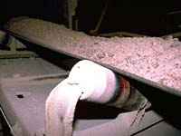
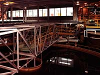
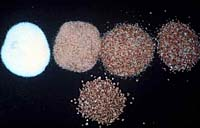
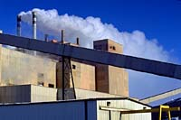

| There are several steps in the mill operation of the underground potash mine. The ore feed supplied to the refining process consists of potassium chloride (potash), sodium chloride (table salt) and insolubles (mainly clay). The refinery extracts the KCl, or potash, from the salt and clay impurities.
For a look at each stage in the process, just click!
|
1. Mill Control Room
As its name suggests, this is the centre of the mill operation. The ore is monitored throughout the refining process using instruments, gauges and recorders. These constantly measure important variables such as temperatures, flow rates, amperages, pressures, chemical addition rates and tonnages being processed. Samples are studied at various intervals to ensure a consistently high quality product.
|
2. Crushing and GrindingThe first step of the process is to crush the ore down to a size where most of the particles are either separate potash or salt crystals with the clay mixed between the particles. This is done by dry-crushing the ore, then placing it into a brine solution. The ore is then ground to produce 1/8 inch or smaller particles of potash and salt Brine is like sea-water. In potash refineries it is the water that contains dissolved salt and potash.
|
3. Scrubbing and Debrining After crushing, the slurried ore is agitated or stirred. This process is called scrubbing because it breaks down the clay into very fine particles which remain in the brine as a muddy suspension. The clay is washed off the ore particles. The slurry is then screened and the larger particles are crushed to a smaller size. and the total slurry is then cycloned which removes the brine and the majority of the clay. Some of the smaller ore particles are carried over with the muddy brine and are recovered by a hydro separator, which separates the muddy brine from the small ore particles which are then returned to the circuit. The coarse and fine ore particles are then treated with reagents before they are sent to flotation.
|
4. FlotationThis process separates the potash from the salt particles. This process is used to recover many minerals, is based on the fact that, when in aqueous suspension, mineral particles that are coated with certain chemicals will cling to rising air bubbles. Chemical reagents are added to the salt and potash mixture. The chemicals added to the ore attach themselves to the potash crystals only. This mixture is fed into flotation cells (tanks) containing water and air is forced into the bottom of the cells. The coated particles attract the air bubbles in the flotation cells. This causes bubbles to rise to the surface coated with the desired potash particles, while other associated minerals, such as common salt, fall to the bottom. The potash particles (froth) are skimmed off. The salt particles, unaffected by the reagents, are drawn off from the bottom of the tanks.
|
5. Centrifuging
This process recovers the brine for recycling. The salt and brine from the flotation cells and the potash from the cells are pumped into separate centrifuges. The centrifuge separates the solids from the liquid brine through an operation similar to the spin cycle of a washing machine. The recovered brine is recycled back into the milling process. The salt goes to the disposal area or tailings pond and the potash to the dryers.
|

6. Sizing Pink potash (potash which still retains some iron oxide and minor clay impurities) is classified according to its size. The dried potash is sized by passing the particles through a screen with a specific mesh size. The larger particles are separated into two or three Red products. Screening produces five grades of potassium chloride for the world market - granular, coarse, standard, special standard muriate and chemical.
|
7. Compaction Fine particles of potash are compacted into sheets, crushed and screened to sort particles by sizes suitable for blending with other fertilizer materials. Correct particle size is essential to form a good mix with even particle distribution.
|
8. Crystallization
Potash dust is dissolved and crystallized into saleable products - soluble and refined KCl. The potash dust is dissolved in heated brine, pumped into a crystallizer and cooled. As the solution cools, potash crystals grow and separate out. These crystals are called soluble KCl. Some of the soluble potash is redissolved and recrystallized to form refined KCl. Because these products contain very few impurities, they are white in color.
|

9. Storage
Huge warehouses at the mines provide storage for about 300 000 tonnes of potash products. This capacity would supply a train composed of over 3000 cars stretching 40 miles. Products are removed from storage into railcars as orders are received. Anticaking and dedusting reagents are added during loading. A representative sample of every car loaded is sent to the lab for analyses. The analyses are compared to the product quality specifications and only product meeting the approved specifications is shipped. Product leaving the site is guaranteed to have a minimum of 60.0% K2O (95.0% KCl).
|